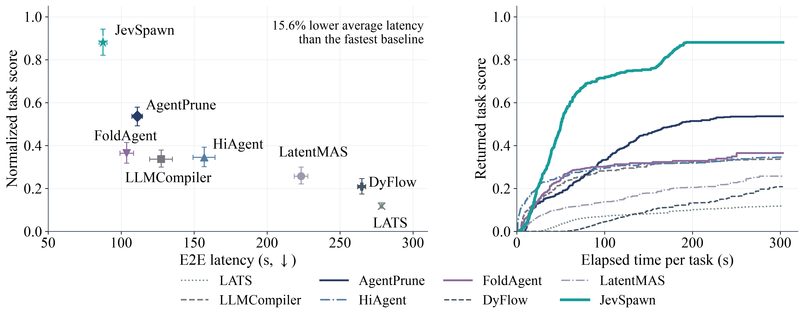
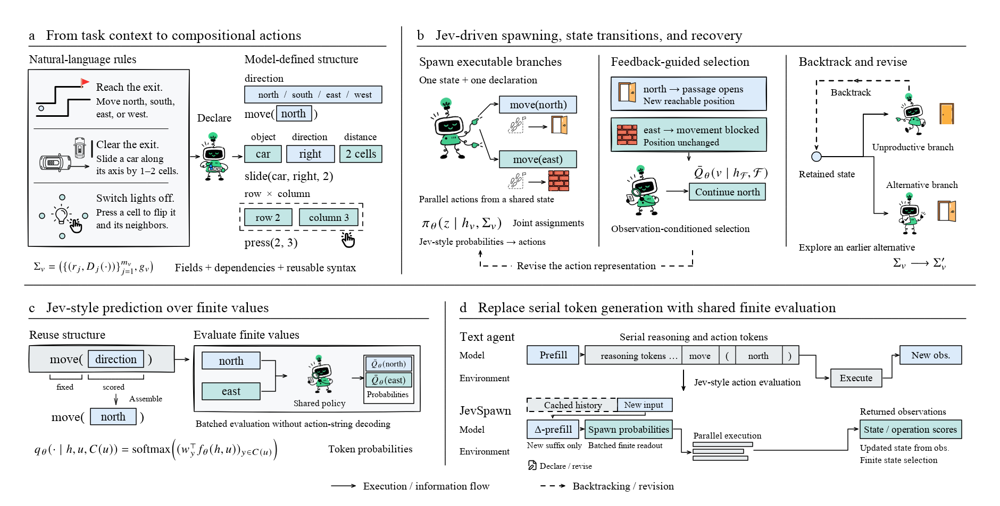

Research preprint · October 2026
JevSpawn
Adaptive Agentic Inference through Compositional Action Spaces
1 Fudan University2 Shanghai Jiao Tong University3 Shanghai Innovation Institute
An agent can explore many actions without writing each action from scratch. JevSpawn brings finite probabilistic prediction to multi-turn interaction through action spaces that are inferred from task context and adapted through feedback.


From task meaning to finite actions
Natural-language rules are expressed as composable action fields. Finite probabilities drive parallel spawning, and returned observations guide continuation, revision, and recovery. Known alternatives share model computation instead of requiring a separate text generation for every branch.


Key results
Qwen3.8-27B · Four H100 GPUs
Maze success
0.9640.91 s E2E latency
Grid success
0.9540.58 s E2E latency
Highest task score
5 / 8Against seven agent baselines
All task scores
| Method | PPNL | Maze | Grid | LightsOut | RushHour | Sokoban | 2048 | Nullify |
|---|---|---|---|---|---|---|---|---|
| LATS | 0.842 | 0.000 | 0.000 | 0.010 | 0.000 | 0.000 | 0.000 | 0.010 |
| LLMCompiler | 0.929 | 0.200 | 0.480 | 0.080 | 0.147 | 0.350 | 5.000 | 0.020 |
| AgentPrune | 0.956 | 0.280 | 0.280 | 0.340 | 0.453 | 0.790 | 1.240 | 0.030 |
| HiAgent | 0.930 | 0.400 | 0.320 | 0.033 | 0.172 | 0.140 | 0.000 | 0.090 |
| FoldAgent | 0.464 | 0.520 | 0.730 | 0.020 | 0.240 | 0.105 | 0.000 | 0.090 |
| DyFlow | 0.828 | 0.040 | 0.020 | 0.040 | 0.060 | 0.200 | 0.120 | 0.060 |
| LatentMAS | 0.902 | 0.320 | 0.120 | 0.030 | 0.113 | 0.095 | 0.000 | 0.050 |
| TypeSafe Jev | 0.955 | 0.960 | 0.930 | 0.660 | 0.290 | 0.250 | 296.000 | 0.170 |
| JevSpawn | 0.950 | 0.960 | 0.950 | 0.610 | 0.390 | 0.150 | 305.120 | 0.210 |
TypeSafe Jev uses the same JevSpawn architecture with API-based finite scoring.
End-to-end latency
| Method | PPNL | Maze | Grid | LightsOut | RushHour | Sokoban | 2048 | Nullify |
|---|---|---|---|---|---|---|---|---|
| LATS | 131.34 | 300.00 | 300.00 | 299.01 | 298.57 | 300.00 | 300.00 | 298.18 |
| LLMCompiler | 13.61 | 235.32 | 117.16 | 99.26 | 223.42 | 123.99 | 33.51 | 172.85 |
| AgentPrune | 24.23 | 47.91 | 79.57 | 233.19 | 115.48 | 142.53 | 202.57 | 42.90 |
| HiAgent | 16.25 | 209.06 | 206.05 | 254.54 | 20.32 | 150.76 | 300.00 | 98.18 |
| FoldAgent | 43.55 | 191.69 | 61.44 | 84.17 | 22.74 | 78.32 | 300.07 | 48.10 |
| DyFlow | 125.47 | 285.43 | 269.57 | 294.18 | 289.03 | 280.57 | 287.35 | 287.37 |
| LatentMAS | 48.70 | 269.86 | 281.61 | 292.64 | 150.25 | 269.05 | 289.03 | 185.05 |
| TypeSafe Jev | 43.96 | 63.98 | 78.39 | 153.95 | 187.45 | 214.76 | 249.05 | 189.41 |
| JevSpawn | 21.88 | 40.91 | 40.58 | 111.05 | 89.20 | 122.49 | 169.94 | 104.21 |
E2E latency includes failed tasks and timeouts. API communication is included for TypeSafe Jev.
Watch the interaction unfold
Follow eight paper case studies through action declarations, spawned branches, observations, and answers.
The video replays recorded traces. Run the demo locally to explore each turn.
bash demo/run.sh
Citation
@misc{su2026jevspawnadaptiveagenticinference,
title={JevSpawn: Adaptive Agentic Inference through Compositional Action Spaces},
author={Haoyang Su and Weiran Huang},
year={2026},
eprint={2610.00437},
archivePrefix={arXiv},
primaryClass={cs.AI},
url={https://arxiv.org/abs/2610.00437},
}